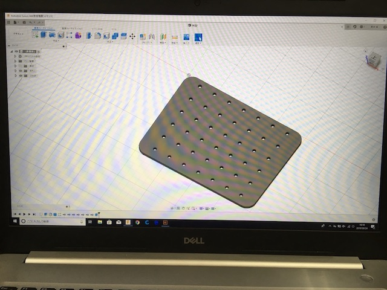
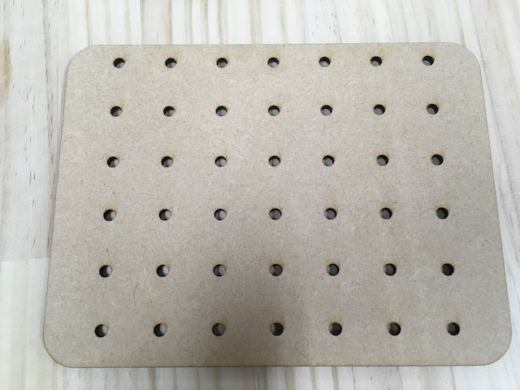
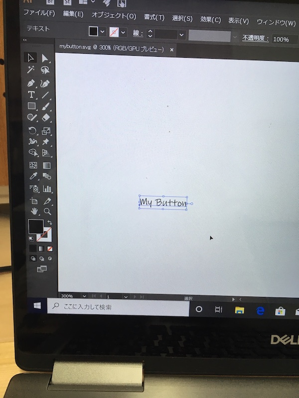

1.レシピ
2.ジェネレーティブデザイン
3.読書
質問：ジェネレーティブデザインの良い題材はないか？
質問：テーマについて、レシピ作りはみんなでやるようになったのでテーマを変えたい。
「ジェネレーティブデザインの実用化の観察orゼミ活動における創作の観察」
データ作成と出力テストを行なった。

FUSIONデータをレーザーカッターで切りました。
等間隔の穴が空いたボードでものをひっかけれるようにできるものを作りました。


Illustratorデータを３Dプリンターで出力しました。
ボタンをオリジナルのフォントでアレンジしたものを作りました。
データ変換のレシピは次回までお待ちください。
今週はジェネレーティブデザインについて調べました。
ジェネレーティブデザインについての記事こちら（最終閲覧２０１９年９月３０日）
上記のHPによるとジェネレーティブデザインのメリットは次の３つである。
１、設計の可能性を幅広く検討できる
自分が出した条件に掛け算で答えを出してくれる
２、従来は不可能だった設計が可能に
３、素材と製造法に合わせて最適化
実用化に生かされている例をHPで見ることができます。
こちらの記事でもジェネレーティブデザインについてのメリットが書いてある。
こちら（最終閲覧２０１９年９月３０日）
１、軽量化
２、パフォーマンスの向上
３、パーツの一体化
一方デメリットとしては
１、アイディアをそのまま生かすといよりは、人の経験でより良いデザインに仕上げていく必要がある。
２、形が複雑化するので加工が大変になる。
現在はアイディア出しをしている段階。
穴等の固定の位置に制限があって、複雑すぎないテーマがないか探してます。
現在のところ、スマホケース関連、服のボタン、椅子を思いついています。
他の意見をゼミで聴きたい。
SLACKで紹介されていた本が図書室にあったので借りて読んでみました。
デザイン思考について書かれていた本でした。

デザイン思考では人の視点でものに取り組む必要がある。（p.37）
人々に共感をしてしっかり観察すことが大切だという。
観察をするのに役立つワークとして共感マップが役に立つという。（p.305）
doyolabフレームワーク・共感マップ
ものづくりをしてる人に是非この思考法の実践をオススメしたいとおもった一冊です。
人を観察したものづくりは矢田くんの研究で役に立つのではないだろうか？
保育器の例、MRIのデザインを変えて恐怖を和らげた例（最終閲覧２０１９年９月３０日）
また『行為のデザイン』もおすすめのデザインに関する本なので後日まとめたい。
FABLABの登場などにより、パーソナルなものづくりが可能になったことについて書いてある。(p.8)
・トム・ケリー、デイヴィッド・ケリー（2014）『クリエイティブ・マインドセット−想像力・好奇心・勇気が目覚める驚異の思考法-』日経BP社
・井庭祟（2019）『クリエイティブ・ラーニング-創造社会の学びと教育-』慶應義塾大学出版株式会社